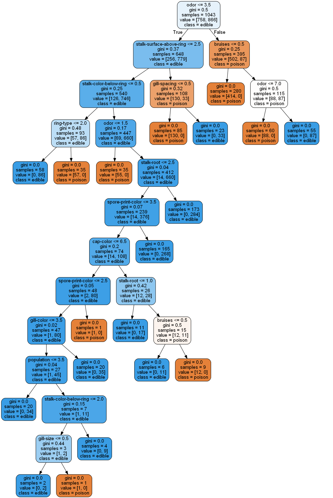
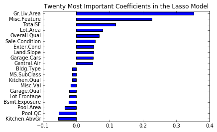

Supervised Machine Learning
This page shows applications of classification and regression.
The Problem:
The audobon society field guide provides a mushroom dataset with individual mushrooms labelled as either poisonous or edible. This is an indispensable tool for mushroom hunters who generally rely on photographic records and online communities to identify poisonous mushrooms.
My task was to draw insights from this dataset to guide mushroom hunters on features to look out for when avoiding poisonous mushrooms.
The Solution:
Learning algorithms such as neural networks and support vector machines would be unsuitable here because they are not easily interpreted. A decision tree clearly shows the "thought process" that goes into a classification. However, decision trees are susceptible to overfitting. To solve this, I used a random forest which is an esemble method that works by bagging several decision trees and combining their results.
First, I preprocess the dataset and split it into a training and testing set. Then I declare a random forect classifier and fit it to the training set. I have chosen the training set to be very small for the sake of demonstrating that the model generalises well.
# -*- coding: utf-8 -*- import pandas as pd from sklearn.ensemble import RandomForestClassifier from sklearn.model_selection import train_test_split def getDataFrame(): 'Parse data into dataframe' data = pd.read_csv('C:/Users/user/Downloads/mushrooms.csv') return pd.DataFrame(data) def splitData(df): 'Split data into training and testing vectors and labels' dF = df for i in dF.columns: values = list(set(dF[i])) values = {values[i] : i for i in range(len(values))} dF[i] = dF[i].apply(lambda t: values[t]) X, y = dF.iloc[:,1:].values , dF.iloc[:,0].values return train_test_split(X, y, test_size = 0.8) df = getDataFrame() # create training and testing vectors and labels X0, X1, y0, y1 = splitData(df) # construct random forest classifier clf = RandomForestClassifier() # fit classifier to training set clf.fit(X0, y0)
Next, I investigate the accuracy of the model on the testing set:
# compute accuracy of classifier on testing set print(sum(clf.predict(X1) == y1) / float(len(y1)))
1.0
Surprisingly, the model achieves perfect accuracy despite having had a small training set to learn from. This suggests that there are generalisable patterns governing whether a mushroom is poisonous or not.
Now the resulting decision tree can be interpreted. For the purposes of recording my work I will only display the first decision tree in the random forest:
from sklearn.externals.six import StringIO from IPython.display import Image, display from sklearn.tree import export_graphviz import pydotplus, os os.environ['PATH'] += os.pathsep + 'C:/Users/user/Anaconda3/Library/bin/graphviz' estimator = clf.estimators_[0] dot_data = StringIO() export_graphviz(estimator, out_file=dot_data, feature_names = df.columns[1:], class_names = ['poison','edible'], rounded = True, proportion = False, precision = 2, filled = True) data = dot_data.getvalue() graph = pydotplus.graph_from_dot_data(data) display(Image(graph.create_png()))
The resulting tree is pictured:
This tree can be scrutinised to arrive at a set of easy to understand conditions that determine whether a mushroom is poisonous or not.
The Problem:
The Ames Housing data maintains an extensive record of housing prices and features. My goal was to predict housing prices given the features. A good model would predict the prices with 80% accuracy without overfitting to the training set. It should also be easily interpreted.
The Solution:
First, I import the required modules.
import pandas as pd, numpy as np, matplotlib.pyplot as plt from scipy.stats import skew from sklearn.preprocessing import LabelEncoder from sklearn.model_selection import KFold, cross_val_score, train_test_split from sklearn import linear_model
Next, I preprocess the data.
def preprocess(): 'import and clean the data' # parsing data into dataframe data = pd.read_csv('C:/Users/user/Downloads/ames.csv') df = pd.DataFrame(data).drop(['Order','PID','Utilities'], axis=1) # imputing Lot Frontage by grouping by Neighborhood df['Lot.Frontage'] = df.groupby('Neighborhood')[ 'Lot.Frontage' ].transform(lambda s: s.fillna(s.median())) # imputing columns with manageable number of NANs for col in ['Electrical','Kitchen.Qual','MS.Zoning','Exterior.1st', 'Exterior.2nd','Sale.Type']: df[col] = df[col].fillna(df[col].mode()[0]) # impute remaining categorical variables for col in df.dtypes[df.dtypes == "object"].index: df[col] = df[col].fillna('None') # impute numerical variables with median for col in df.dtypes[df.dtypes != "object"].index: df[col] = df[col].fillna(0) # transform categorical variables into dummy numeric for col in df.dtypes[df.dtypes == "object"].index: lbl = LabelEncoder() lbl.fit(list(df[col].values)) df[col] = lbl.transform(list(df[col].values)) # Adding summary feature df['TotalSF'] = df['Total.Bsmt.SF'] + df['X1st.Flr.SF'] + df['X2nd.Flr.SF'] #log transform skewed numeric features: numerics = df.dtypes[df.dtypes != "object"].index skewed = df[numerics].apply(lambda x: skew(x.dropna())) skewed = skewed[abs(skewed) > 0.75].index df[skewed] = np.log1p(df[skewed]).dropna() # split dataframe into training and testing sets return train_test_split(df.drop(['SalePrice'], axis=1), df['SalePrice'], test_size=.5)
Finally, I train and test a regularised regression model on the dataset and display the results.
def main(): # get training and testing data X0, X1, y0, y1 = preprocess() # train and test the model lasso = linear_model.Lasso(alpha=.0005) lasso.fit(X0, y0) print('Lasso Score: %s' % '{0:.3f}'.format(lasso.score(X0, y0))) print('Cross Validation: %s' % '{0:.3f}'.format(np.mean(cross_val_score(lasso, X1, y1, cv=5)))) print('RMSLE: %s' % '{0:.3f}'.format(rmsle_cv(lasso, X1, y1))) lasso.predict(X1) # plot the top 20 coefficients (top 10 +/-) coefs = pd.Series(lasso.coef_, index = X0.columns) coefs = pd.concat([coefs.sort_values().head(10), coefs.sort_values().tail(10)]) coefs.plot(kind = "barh") plt.title("Twenty Most Important Coefficients in the Lasso Model") plt.show() return np.round(np.exp(lasso.predict(X1)))
Running the main function returns the results.
Lasso Score: 0.901
Cross Validation: 0.906
Root Mean Square Logarithmic Error: 0.125

Lasso regression eliminates many unneeded variables. The top 20 variables are displayed. These give a great indication of the features that influence housing prices the most.
Acknowledgements:
I wrote this program as my first ever implementation of a machine learning algorithm on real world data in mid 2015. Thus, some portions of the code may have been with the assistance of various sources.